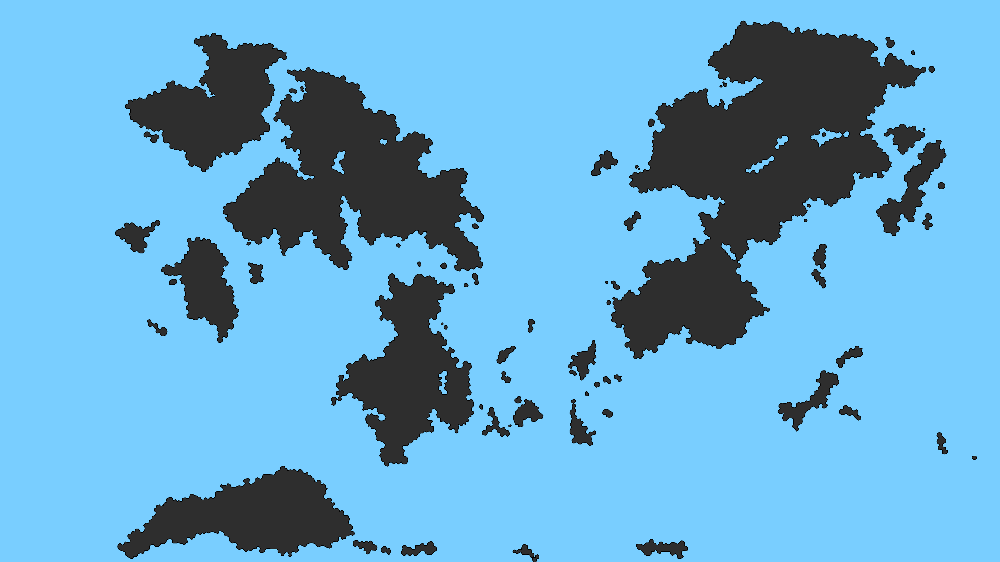

地理
このページは、＜創作世界＞の地理、地質、地形、海洋分布に関する設定情報と制作上のメタ情報を記録する。
概要
＜創作世界＞の地理設定は、世界地図、プレート境界、山岳分布、航路、赤道位置などの地図資料を基礎として整理する。
地理は、人類史、文明分布、交易路、国家形成、文化圏、言語分化、戦争、災害史に影響する一次条件として扱う。
世界地図

＜北西大陸＞ ＜東大陸＞ ＜南西大陸＞ ＜メイン半島＞地図の詳細解説は未作成。
地理設定の基本方針
＜創作世界＞の地理は、地球型惑星の地質・気候・海洋条件を基本として構築する。
大陸配置、海岸線、山脈、火山、海峡、航路は、可能な限り物理的・地質的な理由を持つものとして扱う。
大陸と海洋
現在確認されている主要な大陸区分には、＜北西大陸＞、＜東大陸＞、＜南西大陸＞がある。
＜東大陸＞は、地図上では複数の大陸が隣接しているように見えるが、設定上は地続きの一つの大陸として扱う。
主舞台地域
主舞台地域は、北西側の大陸群の南東端に位置する半島地方である。
この地域は、大陸本体から南東へ張り出す半島と、その周辺の島嶼・海峡・沿岸海域を含む。
魔法国崩壊後、この半島では旧魔法国時代の水利、都市、研究施設、交通拠点が各地に散在する一方、街や村から遠い郊外遺構の多くは維持管理されず、野生生物、賊徒、魔獣、異常魔力で変異した危険生物の棲み処へ変わっていった。遺跡は資産であると同時に、継続的な危険源でもある。
特に危険なのは、魔力結晶を採掘していた深い地下施設である。これらは坑道と研究所が一体化した複雑な構造を持ち、放棄後は露出した結晶から漏れ出た魔素・魔力によって、内部環境の汚染、変異生物の発生、空間異常、崩落と洞窟化が進んだ。地上遺構よりもはるかに管理が難しく、長く手つかずの危険地帯となった。
近年では、こうした地下遺跡の一部で高濃度汚染が弱まり、新たに侵入可能になった区域が増えている。この変化は、遺跡探査、危険区域調査、護衛、資材回収、危険生物駆除などの需要をさらに押し上げている。
また、旧首都近傍から南へ伸びて海へ到達した勢力は、海運の発展を通じて、半島各地と内陸方面を一つの広域戦略空間として意識するようになった。以後の半島史では、海運の伸長が各勢力の視野と国家形成の速度に大きく影響する。
平野部の都市圏
メイン半島の大規模平野では、河川、湖沼、用水、街道に沿って居住地と生産地が連なり、中心都市から離れるほど集落密度が下がる。
ただし、半島全体が均一に埋まっているわけではない。主要都市や大河沿いの中核地域を除けば、人口はまだ多くなく、人々は安全、水利、交易、防衛の都合から、ある程度まとまって居住する傾向が強い。
主要都市からおおむね100kmから200km程度までは、河川、街道、耕地条件に支えられた集落圏がある程度つながる。しかし、その外側では居住密度が大きく落ち、他国の集落圏との間には空白地、猟場、季節利用地、半独立の地元部族圏のような地域が広く残る。
このため、領主や国家の支配は、広い面積を均等に塗りつぶす形ではなく、街や集落という拠点、それらを結ぶ街道、渡河点、港、倉庫、関所を核にしつつ、その周辺へ緩やかな領域感覚が広がる形で成立することが多い。地図上で「このあたりはうちの領域」という感覚はあるが、その中間の荒地や山野まで細かく実効支配しているとは限らない。
平野部の中核都市周辺では、10kmから20km前後の距離感で小規模から中規模の街や集落が存在する構図は十分にありうる。ただし、これは水利と街道に恵まれた中核平野で成立しやすい局地的傾向であり、半島全体の一般像ではない。主要街道や水系に沿う方向は密度が高く、乾燥地や不利な地形では間隔が広がる。
近年は海運による物資搬入が容易になってきたため、従来なら自立しにくかった中間地点にも、中継港、小規模な荷揚げ地、宿場的な町、交易依存の新興集落が増えつつある。ただし、これによって国土全体が面として埋まるのではなく、海路に接続した拠点と補給回廊の密度が上がっていると考えるべきである。
メイン半島の地域構造
メイン半島は、南部、西部、北東部という三つの大きな地域性を持つ。いずれも同じ半島世界に属するが、地形、海運条件、農耕適性、歴史的役割が異なるため、共同体と国家の性格にも差が生じている。
南部は平野と農地が多く、面状の支配域が成立しやすい地域である。中核都市と水利に支えられた平野部では生産力が高く、南部諸勢力や後の王国・帝国はここを基礎として国力を築いた。ただし、面状支配が可能とはいえ、郊外まで高密度に埋まっているわけではなく、都市圏の外では人口密度は低い。
西部は海沿い重視の地域であり、沿岸交易と海運で発展した。西側の川を越えた地帯は南部との折衝地帯にあたり、海運ルートに沿って発展している。一方で、山手側の空白地は境界未確定地というより、単に人口が足りず実効支配を置けない地帯であり、西部の勢力は内陸奥地より海岸線と港を優先する傾向が強い。
北東部は、南西部に比べてやや分断的である。南部から北東部へ向かう現実的な経路は、東海岸沿いに北上する海陸回廊か、北部の川沿いから山道へ抜ける北回りの二系統に限られやすく、日常的な大量往来には制約がある。
北東沿岸は極寒ではないが、外洋に直接開いて海が荒れやすく、沿岸は崖や岩場が多いため、海運や漁労に適した海岸線が限られている。さらに、外洋風は塩気と湿気を含み、作物に害を与えやすく、土壌も石や岩が多く農耕には不利である。そのため海側は有効活用されにくく、主要都市と人口は山寄りに偏りやすい。
この地理条件から、北東部では山の民的な共同体が長く続き、南西部と同胞感を持ちながらも、独自の生活圏と防衛意識を発達させた。北方との交易は長く続くが、友好圏というより外国との緊張を含んだ接触であり、北方圧力への警戒は常に強い。
近年の北東部では、東部沿岸海運の育成と、北の川沿い山地ルートの防衛線化が同時に進められている。前者は南部経由で西部ともつながる海上補給線を生み、後者は宿場、居住地、軍事拠点を線状に整備して北方侵入路を抑える構想である。将来的には、北東部共同体は分裂するのではなく、一体性を保ったまま、東部沿岸圏と北部防衛圏へ役割分担していくと見込まれている。
参考風景資料
メイン半島平野部の都市圏イメージとして、700年から800年前頃の魔法国家時代の衛星生産都市と、現在の帝国直轄領における発展後の同地点風景を参考画像として扱う。
前者は、優れた水場と治水、広い農耕地帯、首都圏近傍の衛星都市という性格を示す。後者は、その同系統都市が物流、宿場、倉庫、組合、行政機能を強め、帝国内でも上位規模の中核都市へ成長した姿の参考になる。